가구제작기능사 (2002-01-27 기출문제)
1과목: 임의 구분
1. 제도판에 있어서 중판의 규격은?
- 600㎜ x 450㎜
- 900㎜ x 600㎜
- 1000㎜ x 750㎜
- 1200㎜ x 900㎜
(정답률: 84%)

2. 디바이더의 사용법 중 틀린 것은?
- 치수를 도면에 옮길 때
- 작은 원을 그릴 때
- 선을 일정한 간격으로 분할할 때
- 도면의 길이를 다른 도면에 옮길 때
(정답률: 86%)
3. 해칭(Hatching)선에 대한 설명으로 옳은 것은?
- 기본 중심선 또는 기선에 대하여 30° 의 가는 실선을 긋는다.
- 같은 부품의 단면은 떨어져 있어도 해칭의 방향과 간격은 같게한다.
- 서로 인접하는 단면의 해칭은 각도 및 간격을 같게 해서는 안된다.
- 해칭선은 45° 의 굵은 직선을 사용한다.
(정답률: 78%)
4. 보기와 같은 도형에서 평면도로 옳은 것은?
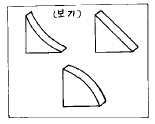
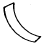
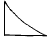
(정답률: 93%)
5. 다음 물체의 정면도는? (단, 화살표 방향이 정면)
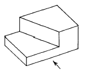
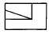
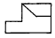
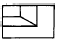
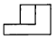
(정답률: 91%)
6. 다음 그림은 3각법에 의한 투상도이다. 실제 물체의 모양으로 옳은 것은?
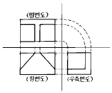
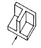
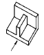
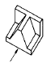
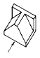
(정답률: 90%)
7. 평행 투시도법에서 소점의 수는?
- 1개
- 2개
- 3개
- 없음
(정답률: 74%)
8. 등각투상도에서 3개의 축이 이루는 각도는 얼마인가?
- 60°
- 90°
- 120°
- 180°
(정답률: 84%)
9. 상쾌한 느낌이나, 고요하고 조용한 느낌이 주로 나타나는 것은?
- 율동(rhythm)
- 조화(harmony)
- 대비(contrast)
- 균형(balance)
(정답률: 73%)
10. 아래 그림은 직각을 3등분하는 방법인데 길이의 설명이 틀린 것은?
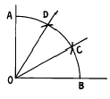
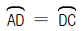
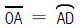
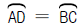
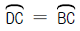
(정답률: 92%)
11. 붙박이 가구와 모듈러 가구에 대한 내용으로 틀린 것은?
- 생활의 적응성을 높일 수 있다.
- 공간의 유용성을 높일 수 있다.
- 심리적인 안정감과 영구성을 줄 수 있다.
- 붙박이 가구는 유동성과 융통성이 크다.
(정답률: 90%)
12. 도면에서 표제란이 위치하는 곳은 어디인가?
- 도면 오른쪽 위
- 도면 오른쪽 아래
- 도면 왼쪽 아래
- 도면 왼쪽 위
(정답률: 83%)
13. 대비의 종류가 다른 것은?
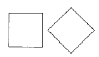
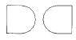
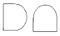
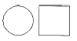
(정답률: 91%)
14. 다음 그림의 창호표시 기호가 나타내는 것은?
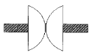
- 회전문
- 쌍여닫이문
- 자재문
- 빈지문
(정답률: 69%)
15. 나비형태로 몸체가 하나로 되어 있어 문짝과 측판에 고정하여 쓰이는 경첩은?
- 피봇 경첩
- 숨은 경첩
- 나비 경첩
- 플랩 경첩
(정답률: 92%)
16. 수액제거법에 대한 설명 중 부적당한 것은?
- 1년 이상 방치하여 두면 우로에 의하여 수액이 빠지고 건조가 빠르다.
- 목재는 수액을 제거해야 건조가 빠르다.
- 강물에 띄워 약 반년쯤 물에 담가두면 수액은 제거되지만 흡수된 물 때문에 건조는 늦어진다.
- 목재를 열탕으로 삶으면 수액이 빨리 제거되어 건조가 빨라진다.
(정답률: 76%)
17. 전건재를 옳게 설명한 것은?
- 기건재가 더욱 건조되어 함수율이 0% 가 된 것을 뜻한다.
- 전건재는 대기중에 방치하여 함수율이 3% 가 된 것을 뜻한다.
- 기건재가 점점 증발함으로써 함수율이 10% 가 된 것을 뜻한다.
- 기건재를 대기중에 방치하여 함수율이 5% 가 된 것을 뜻한다.
(정답률: 78%)
18. 목질부 보다는 약간굳고 단단한 부분이 되어 가공이 좀 불편하고 미관상 좋지 않으나 목재로 사용하는 데에는 별 지장이 없는 옹이는?
- 산옹이
- 죽은옹이
- 썩은옹이
- 옹이구멍
(정답률: 85%)
19. 부패균에 의한 목재의 부패를 방지하는 방법으로 틀린 것은?
- 온도를 4℃ 이하나 55℃ 이상으로 한다.
- 습도를 20% 이하나 80% 이상으로 한다.
- 물에 담가 공기를 차단한다.
- 도료로 표면 피복을 한다.
(정답률: 75%)
20. 침엽수와 활엽수를 가장 쉽게 구분할 수 있는 방법은?
- 잎의 생긴 모양을 보고 구분한다.
- 지질의 경도 상태를 보고 구분한다.
- 나이테 분산모양을 보고 구분한다.
- 나무의 크기와 성장모양을 보고 구분한다.
(정답률: 84%)
2과목: 임의 구분
21. 다음 중 나이테가 없는 나무는?
- 감나무
- 나왕
- 대나무
- 참죽나무
(정답률: 93%)
22. 추재에 대한 설명이 아닌 것은?
- 원형질이 적게 들어있다.
- 세포막이 두껍다.
- 암색을 띤다.
- 목질이 연하다.
(정답률: 81%)
23. 목재의 함수율 변화에 따라 일어나는 현상 중 옳지 않은 것은?
- 형태의 변화가 생긴다.
- 강도의 변화가 생긴다.
- 비중의 변화가 생긴다.
- 압축강도의 변화가 특히 크게 나타난다.
(정답률: 65%)
24. 가구제작에 많이 이용되는 합판의 특성에 관한 기술로 옳지 않은 것은?
- 뒤틀림이 없다.
- 곡면판을 쉽게 만들 수 있다.
- 방향에 따른 강도차가 적다.
- 팽창수축이 크다.
(정답률: 83%)
25. 합판단판의 제조방법이 아닌 것은?
- 로우터리 베니어(Rotary veneer)
- 슬라이스드 베니어(Sliced veneer)
- 소오드 베니어(Sawed veneer)
- 오우버레이 베니어(Overlay veneer)
(정답률: 76%)
26. 알루미늄의 특성으로 잘못된 것은?
- 열이나 전기전도율이 높고 전성과 연성이 풍부하다.
- 공기중에서 표면에 산화막이 생겨, 내부를 보호하는 역할을 한다.
- 산, 알칼리에 강하므로 보통 콘크리트에 사용한다.
- 알루미늄은 실내장식재, 가구와 창호, 커튼레일에 많이 사용된다.
(정답률: 88%)
27. 목재의 방부법으로 가장 많이 쓰이는 방법은?
- 일광직사
- 침지
- 표면탄화
- 표면피복
(정답률: 63%)
28. 다음 중 계절적으로 가장 좋은 죽재의 벌목시기는?
- 1월 하순부터 2월 사이
- 4월 하순부터 5월 사이
- 7월 하순부터 8월 사이
- 10월 하순부터 11월 사이
(정답률: 86%)
29. 집성목재에 관한 기술 중 틀린 것은?
- 집성재란 두께 15-50mm의 단판을 제재하여 섬유방향을 거의 평행이 되게 여러장 겹쳐서 접착한 것이다.
- 집성목재는 응력에 따라 필요한 단면을 만들 수 있으나 목재의 강도를 인공적으로 조절할 수는 없다.
- 집성목재는 필요에 따라 아치와 같은 굽은 용재를 만들 수 있다.
- 집성목재는 길고 단면이 큰 부재를 간단히 만들 수 있다.
(정답률: 75%)
30. 열경화성 수지의 특성이 아닌 것은?
- 내열성이다.
- 밀도가 크며 딱딱하다.
- 탄력성이 없고 부스러지기 쉽다.
- 가열하면 유동성이고 냉각시키면 다시 굳는다.
(정답률: 79%)
31. 목재의 접착조건 중 틀린 것은?
- 활엽수가 침엽수보다 접착력이 강하다.
- 비중이 클수록 접착력이 강한 경우가 많다.
- 목재의 함수율은 8~12%가 적당하다.
- 마구리면이 종단면보다 접착력이 좋다.
(정답률: 68%)
32. 목재의 역학적 성질에 대한 설명 중 틀린 것은?
- 인장 및 압축강도는 목재를 인장시키고 압축시킬 때 생기는 외력에 대한 내부저항을 뜻한다.
- 섬유의 평행방향의 인장강도는 목재의 제강도 중에서 가장 크다.
- 목재섬유에 직각방향의 인장강도는 평행방향에 비해 상당히 크다.
- 섬유의 평행방향에 대한 강도가 가장 크고 섬유의 직각 방향에 대한 것이 가장 작다.
(정답률: 72%)
33. 흡수팽창이 있으나 부러지지는 않으며 가소성이 있고, 실용적이나 옥외에서의 사용은 불가한 것은?
- 반경질비닐타일
- 경질비닐타일
- 리노륨타일
- 고무타일
(정답률: 52%)
34. 마이타조인트의 특징으로 잘못된 것은?
- 볼트의 장착과 분리가 자유롭다.
- 강력한 구심력 작용으로 접합력이 우수하다.
- 접합의 각도가 90° ∼ 180° 까지 가능하다.
- 기능에 비해 가구형태에 대한 디자인이 다양하지 못하다.
(정답률: 72%)
35. 목재의 활엽수에 관한 설명으로 맞지 않는 것은?
- 피자식물의 쌍떡잎 식물이다.
- 주로 연목(軟木)이다.
- 성질이 일정하지 않다.
- 가구재나 장식재로 쓰인다.
(정답률: 73%)
36. 수공구와 목공기계가 잘못 짝지어진 것은?
- 띠톱기계 - 쥐꼬리톱
- 각끌기계 - 평끌
- 루우터기계 - 홈대패
- 손밀이대패 - 배대패
(정답률: 71%)
37. 반턱맞춤을 마름질 하는데 가장 중요한 일은 무엇인가?
- 권척으로 나누는 일
- 직각자로 부재의 직각도를 보는 일
- 기준면을 기준하여 그무개질 하는 일
- 대패질 하는 일
(정답률: 60%)
38. 쪽매방법 중 가장 강도가 큰 것은?
- 빗쪽매
- 반턱쪽매
- 제혀쪽매
- 딴혀쪽매
(정답률: 84%)
39. 오동나무 판재 2개를 직각으로 고정시키는 방법으로 가장 이상적인 것은?
- 접착제를 바르고 대나무 못을 친다.
- 짧은 장부맞춤을 한다.
- 나사못으로 조인다.
- 무두못(無頭釘)을 박는다.
(정답률: 68%)
40. 장부 구멍파기 할 때의 유의사항 중 옳지 않은 것은 ?
- 끌의 폭은 구멍의 폭에 맞는 것을 사용하며 치수가 맞는 끌이 없을 때에는 좁은끌로 지그재그형으로 판다.
- 끌의 뒷날이 자기 앞쪽으로 향하게 하고,똑바로 수직으로 끌질한다.
- 한부재에 팔구멍이 큰것과 작은것이 있을 때에는 큰것을 먼저 판다.
- 한 부재에 팔구멍이 깊은것과 얕은것이 있을 때에는 얕은것을 먼저 판다.
(정답률: 65%)
3과목: 임의 구분
41. 맞춤공작의 기본사항에 해당되지 않는 것은?
- 평탄하게 깎을 것
- 반듯하게 켤 것
- 바른 각도로 자를 것
- 이 생기지 않도록 사포질 할 것
(정답률: 87%)
42. 대팻날 갈기에 있어서 날끝각도는 얼마로 유지되도록 갈아야 하는가?
- 15° - 20°
- 25° - 30°
- 35° - 40°
- 45° - 50°
(정답률: 73%)
43. 마구리면에 판재를 대고 못을 박을때 못의 길이는 판재 두께의 몇배 정도가 적당한가 ?
- 6.0 - 7.0
- 4.0 - 5.0
- 2.5 - 3.0
- 1.5 - 2.0
(정답률: 49%)
44. 무늬목을 사용하는 목적이 아닌 것은?
- 좋은 목재로 널리 이용할 수 있기 때문에
- 뒤틀림을 방지하고 아름다움을 더해주기 때문에
- 무늬결이 없는 목재에 붙여서 무늬를 만들 수 있기 때문에
- 구조물을 튼튼하게 해주기 때문에
(정답률: 81%)
45. 다음 중 연귀맞춤 방법을 이용하지 않는 것은?
- 상자 만들기
- 사진틀 만들기
- 의자의 안장짜기
- 책상다리 만들기
(정답률: 80%)
46. 서랍을 다음 그림과 같이 만들때 맞춤의 명칭으로 옳은 것은?
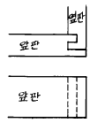
- 사개통 맞춤
- 외 주먹장 맞춤
- 안촉 연귀 맞춤
- 사개턱 솔통 맞춤
(정답률: 65%)
47. 산업 안전표시판 색깔을 정할때 색깔이 가지는 광선 반사율과 주변과의 대비색을 고려하여 결정한 사항과 관계가 없는 것은?
- 노란색 바탕 : 검은색
- 검은색 바탕 : 노란색
- 흰색 바탕 : 빨간색
- 녹색 바탕 : 검은색
(정답률: 78%)
48. 90cm x 180cm의 판재로서 20cm× 35cm의 작은 판을 최대로 몇 개까지 만들 수 있는가? (단, 톱날의 두께는 고려치 않는다.)
- 18개
- 20개
- 23개
- 25개
(정답률: 65%)
49. 목공선반 작업요령을 설명한 내용으로 옳지 않은 것은?
- 직경이 큰 물체는 고속회전으로 깎는다.
- 직경이 작은 물체는 고속회전으로 깎는다.
- 부재를 확실학 척크(chuck)에 고정시킨다.
- 공구받침대 높이를 적절히 조정한다.
(정답률: 72%)
50. 아래 그림 중 쪽매 방법이 좋은 것은?
(정답률: 74%)
51. 판재에 숫주먹장 4개를 가공하려 하면 몇 등분을 해야 하는가?
- 4등분
- 5등분
- 8등분
- 9등분
(정답률: 68%)
52. 조합자의 용도에 대한 설명 중 틀린 것은?
- 장수를 분리하여 보통자로 사용이 가능하다.
- 45˚ 및 직각검사를 할 수 있다.
- 수평· 수직검사를 할 수 있다.
- 그무개로 사용할 수 없다.
(정답률: 75%)
53. 띠톱기계 작업상 주의사항 중 옳지 않은 것은?
- 띠톱을 조정할 때는 반드시 스위치를 끈다.
- 톱날의 긴장상태를 적절하게 조정하고 사용 후에는 톱날을 느슨하게 풀어 준다.
- 소매가 길거나 헐렁한 옷의 착용을 금하고, 장갑을 착용한다.
- 곡선가공시 무리하게 힘을 가하지 말고 천천히 밀어 준다.
(정답률: 76%)
54. 일면포와 이면포로 구분하며, 무한궤도장치에 의해 부재가 자동송재되어 면을 다듬는 기계는?
- 자동대패
- 면취기
- 몰딩샌더
- 멤브레임 프레스
(정답률: 69%)
55. 나사못 접합시 나사못 머리와 부재면과 평탄하도록 사용되는 송곳은?
- 반달송곳
- 돌보송곳
- 세모송곳
- 접시송곳
(정답률: 84%)
56. 대팻집 밑 바닥을 수정할 때 사용되는 자는?
- 하단자
- 줄자
- 접자
- 연귀자
(정답률: 85%)
57. 피도장물의 붓칠 방법으로 옳지 않은 것은?
- 잊어버리기 쉬운 곳부터 한다.
- 복잡한 것은 바깥쪽에서 안쪽으로 칠한다.
- 팔 전체를 움직여서 칠한다.
- 긴 부분은 왼쪽에서 오른쪽으로 칠한다.
(정답률: 70%)
58. 목재의 접합시 유의사항으로 옳지 않은 것은?
- 응력이 큰 곳에서 만들 것
- 재(材)는 적게 깎아내어 약하게 되지 않게 할 것
- 공작이 간단한 것을 쓰고 모양에 치중하지 말 것
- 이음· 맞춤의 단면은 응력의 방향에 직각으로 할 것
(정답률: 63%)
59. 다음 그림의 접합의 명칭으로 맞는 것은?
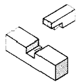
- 통넣은 주먹장맞춤
- 숨은 주먹장맞춤
- 두겁 주먹장맞춤
- 내림 주먹장맞춤
(정답률: 75%)
60. 곡면(몰딩)을 가공할 때 적당한 목공기계는?
- 띠톱
- 둥근톱
- 보링기계
- 루우터기계
(정답률: 67%)